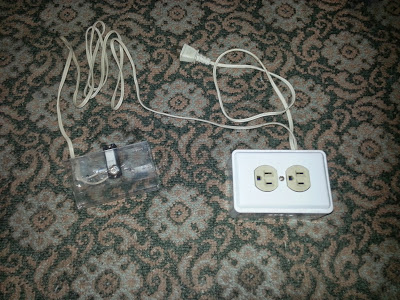
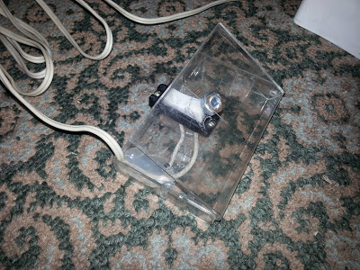

As an electronics hobbyist is very often necessary to make project permanent in a nice PCB.
Sometimes is necessary to replace or modify some components in a existent PCB or just recover components from an old one, for every case, what we need?
Yes! A solder iron!, useful tool for playing with electronics right?
If we’re talking of a hobby probably we’re using a cheap soldering iron (or a not so expensive one). So probably we don’t get any temperature trimming, stand by mode or rocket materials for the tip, so after an hour (or even just a few minutes) the tip of our soldering iron has become black and carbonized so it doesn’t melt solder any more, we need to turn it off and leave it to dissipate heat in order to use it again. Very annoying!
This occur because of excessive heat accumulation at the tip (depends of power and up time) [40W+ , 20 mins].
Lets solve this!
First we need to build a very, very simple one component/circuit.
This way we cut the power signal to the half, the power decrees to the half as will and the heat remains just enough to be rise rapidly, but low enough to keep the tip clean and shiny.
We control the power rising with an interrupter conveniently mounted in a pedal.
Mount the circuitry inside a box with proper power connectors so we can attach the soldering iron.
Now for the pedal we are gonna use:
A switch that match our requirements (110 or 220 volts) and ( 1Amp or more).
An old cassette case.
Power cable (2 wires)
Connect the 2 wires (one end) according to the circuit diagram, and connect the other end to the pins in the switch.
Glue the switch inside the cassette case so it can be activated by pressing with your foot. (be sure it gets activated before apply the hot glue).
Now connect your box to the power, connect your soldering iron to the box and put the pedal in the floor.
 
When melting solder keep your foot in the pedal, and release when not using it.
[Warning!]: Remember to disconnect the power of the box when your done, the box DOES NOT disconnect your soldering iron when you release the pedal it just keep the power in appropriate level so you’ll leave your iron on if you don’t disconnect it.
Note: I also posted this on Instructables